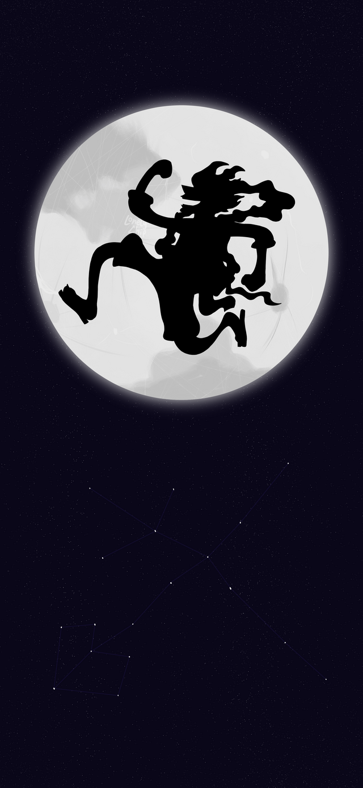
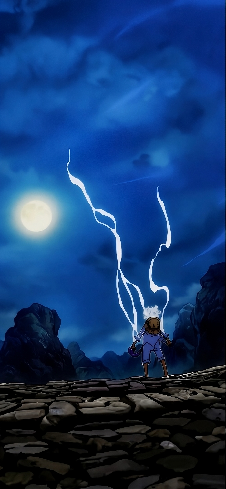
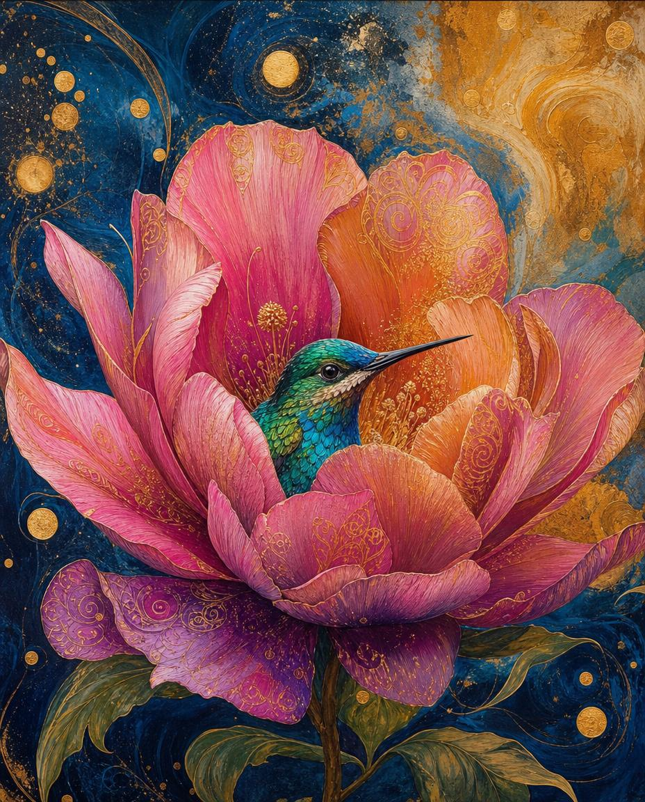
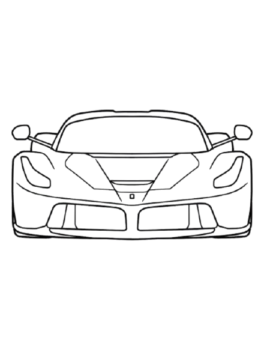
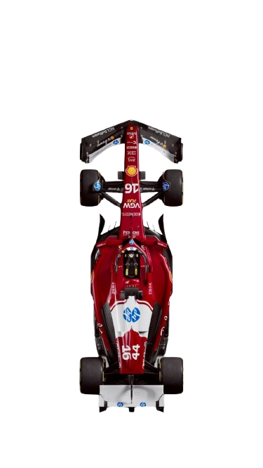

Note:
one thing that most people get wrong is that <h(x)> is a partof body not <head> and it got range from 1 to 6(x∈[1,6],∀ x∈N) Head:Para: One Piece, created by Eiichiro Oda, is the story of Monkey D. Luffy — a rubber-bodied pirate with a straw hat and an impossibly big dream: to find the legendary treasure "One Piece" and become the King of the Pirates. What starts as a simple treasure hunt slowly peels back the layers of a vast, mysterious world ruled by an oppressive World Government, where ancient secrets, forbidden powers (Devil Fruits), and hidden histories lurk beneath every island. Luffy recruits a crew of flawed, unforgettable misfits — a hopelessly lost swordsman, a money-obsessed navigator, a chivalrous cook, a compulsive-liar sniper — and together they sail the deadly Grand Line chasing freedom, friendship, and their own dreams. The genius of One Piece is that it never stops reinventing itself: each new island feels like a different genre, from political thrillers to samurai epics to sci-fi, while the overarching mystery keeps deepening. It's the best-selling manga of all time (500M+ copies), still ongoing after nearly 30 years, and the anime has crossed 1,100 episodes — a massive commitment that pays off in a way few other series can match. If you've ever wanted a story where every character has a dream worth rooting for and the world feels genuinely infinite, this is it.
better Para:
One Piece, created by Eiichiro Oda, is the story of Monkey D. Luffy — a rubber-bodied pirate with a straw hat and
an impossibly big dream: to find the legendary treasure "One Piece" and become the King of the Pirates.
What starts as a simple treasure hunt slowly peels back the layers of a vast, mysterious world ruled by an oppressive World Government,
where ancient secrets, forbidden powers (Devil Fruits), and hidden histories lurk beneath every island. Luffy recruits a crew of flawed,
unforgettable misfits — a hopelessly lost swordsman, a money-obsessed navigator, a chivalrous cook, a compulsive-liar sniper — and together they sail the deadly Grand Line chasing freedom, friendship, and their own dreams.
The genius of One Piece is that it never stops reinventing itself: each new island feels like a different genre, from political thrillers to samurai epics to sci-fi, while the overarching mystery keeps deepening.
It's the best-selling manga of all time (500M+ copies), still ongoing after nearly 30 years, and the anime has crossed 1,100 episodes — a massive commitment that pays off in a way few other series can match.
If you've ever wanted a story where every character has a dream worth rooting for and the world feels genuinely infinite, this is it.Images:





code: <!DOCTYPE html> <head> <title>Heading_Para_Links_Images</title> </head> <body> <p> <p style="color: red;">Note:</p>one thing that most people get wrong is that <h(x)> is a partof body not <head> and it got range from 1 to 6(x∈[1,6],∀ x∈N) Head: <br> <h1>Most importantest head🤣</h1> <h2>More importantererererer head</h2> <h3>More importanterererer head</h3> <h4>More importantererer head</h4> <h5>More importanterer head</h5> <h6>More important head</h6> normal text </p> <p> Para: One Piece, created by Eiichiro Oda, is the story of Monkey D. Luffy — a rubber-bodied pirate with a straw hat and an impossibly big dream: to find the legendary treasure "One Piece" and become the King of the Pirates. What starts as a simple treasure hunt slowly peels back the layers of a vast, mysterious world ruled by an oppressive World Government, where ancient secrets, forbidden powers (Devil Fruits), and hidden histories lurk beneath every island. Luffy recruits a crew of flawed, unforgettable misfits — a hopelessly lost swordsman, a money-obsessed navigator, a chivalrous cook, a compulsive-liar sniper — and together they sail the deadly Grand Line chasing freedom, friendship, and their own dreams. The genius of One Piece is that it never stops reinventing itself: each new island feels like a different genre, from political thrillers to samurai epics to sci-fi, while the overarching mystery keeps deepening. It's the best-selling manga of all time (500M+ copies), still ongoing after nearly 30 years, and the anime has crossed 1,100 episodes — a massive commitment that pays off in a way few other series can match. If you've ever wanted a story where every character has a dream worth rooting for and the world feels genuinely infinite, this is it. </p> <br> <p> better Para: One Piece, created by Eiichiro Oda, is the story of Monkey D. Luffy — a rubber-bodied pirate with a straw hat and <br> an impossibly big dream: to find the legendary treasure "One Piece" and become the King of the Pirates. <br> What starts as a simple treasure hunt slowly peels back the layers of a vast, mysterious world ruled by an oppressive World Government,<br> where ancient secrets, forbidden powers (Devil Fruits), and hidden histories lurk beneath every island. Luffy recruits a crew of flawed,<br> unforgettable misfits — a hopelessly lost swordsman, a money-obsessed navigator, a chivalrous cook, a compulsive-liar sniper — and together they sail the deadly Grand Line chasing freedom, friendship, and their own dreams. <br> The genius of One Piece is that it never stops reinventing itself: each new island feels like a different genre, from political thrillers to samurai epics to sci-fi, while the overarching mystery keeps deepening. <br> <p style="color: rebeccapurple;">It's the best-selling manga of all time (500M+ copies), still ongoing after nearly 30 years, and the anime has crossed 1,100 episodes — a massive commitment that pays off in a way few other series can match. </p> If you've ever wanted a story where every character has a dream worth rooting for and the world feels genuinely infinite, this is it. </p> <pre> <p> Images: <img src="img/ADFDSD.png" alt="かまわないい" width="10%" height="10%"> <img src="img/ASFASFRE.png" alt="かまわないい" width="10%" height="10%"> <img src="img/ERTERTWER.png" alt="かまわないい" width="10%" height="10%"> <img src="img/GDFSG.jpg" alt="かまわないい" width="10%" height="10%"> <img src="img/OYSOYIFADF.jpg" alt="かまわないい" width="10%" height="10%"> <img src="img/QWRWYTERWT.jpg" alt="かまわないい" width="10%" height="10%"> <img src="img/download2.gif" alt="かまわないい" width="10%" height="10%"> <img src="img/RTERYRET.png" alt="かまわないい" width="10%" height="10%"> <img src="img/WERTYR.png" alt="かまわないい" width="10%" height="10%"> <img src="img/WRWE.png" alt="かまわないい" width="10%" height="10%"> </p> </pre> </body> </html>